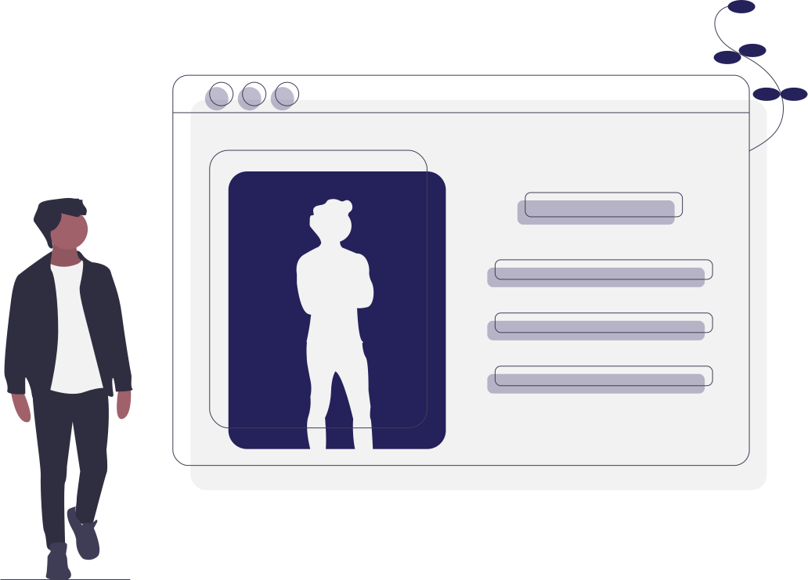

<div class="p-home">
  <aside>
    <header>
      
    </header>
    <ul>
      <li>Ilustrações opensource providas pela plataforma <a href="https://undraw.co/illustrations" target="_blank"><b>unDraw</b></a></li>
      <li>O cliente http utilizado é provido pelo próprio AngularJS</li>
      <li>A escolha do webpack para o projeto foi previamente estudada e demonstrou ser muito efetiva</li>
    </ul>

    <footer>
      <button class="b-btn b-primary" ng-click="logout()">Sair</button>
    </footer>
  </aside>
  <section>
    <h2>Clientes</h2>

    <div>
      <header>
        <input class="b-input" placeholder="Filtrar"/>
        <button class="b-btn b-primary">+</button>
      </header>

      <table>
        <thead>
          <tr>
            <td>Nome</td>
            <td>CPF</td>
            <td></td>
          </tr>
        </thead>
        <tbody>
          <tr>
            <td>Ramon de Brittos Souza</td>
            <td>10609975927222222222222</td>
            <td>
              <button class="b-btn b-primary">E</button>
              <button class="b-btn b-danger">X</button>
            </td>
          </tr>
          
        </tbody>
      </table>
    </div>
  </section>
</div>